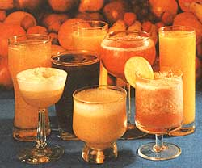

When it's a warm day and you're thirsty, can anything be more satisfying than a generous glass of chilled fruit juice?
And if that "tall cool one" is freshly squeezed, so much the better. And if it happens to be a blend of several different freshly squeezed juices . . . you're talking about a refreshment that approaches the sublime!
Besides, there's no more gracious libation to offer your family and guests than one which both tastes so good and-being full of natural vitamins and minerals-is so good for them. (Its built-in, gentle pickup makes fruit juice the world's best "soft drink" . . . with no caffeine, refined sugar, or carbonation to worry about!)
So let's get down to particulars. The following is a list of only some of the "juiceable" fruits that can be grown and/or bought in this country: You can probably think of even more.
apples
apricots
cranberries
grapefruits
grapes (purple, red, and white)
lemons
limes
oranges
peaches
pears
pineapples
tangerines
Any of the preceding fruits will yield a juice which-when simply poured over ice cubes-tastes great all by its lonesome. (In some cases, of course-say, limes and lemons-you'll probably want to dilute the juice with water and sweeten the fluid with a little honey before drinking it "alone".)
But you also may discover some unexpected and delightful taste sensations by experimenting with combinations of any two of the above fruit flavors. Here are some "duet" ideas to get you started.
apple juice/ apricot nectar grape juice/ cranberry juice pineapple juice/ orange juice lemonade/ tangerine juice orange juice/ apricot nectar apple juice/ pineapple juice grapefruit juice/ orange juice pineapple juice / lemonade peach nectar/ pineapple juice grapefruit juice/ pineapple juice apple juice/ lemonade
And if you want to have some real fun, I recommend that you progress beyond these simple combinations to some truly exotic-tasting beverages (a few are listed below).
Some of the following recipes call for the help of that versatile kitchen appliance, the blender.
All are tried-and-true formulas that never fail to bring me compliments from my guests . . . along with the eternal questions: "What's in it?" and "May I have some more?"
2 cups apple juice
1 cup apricot nectar
1 cup lemonade
1 cup pineapple juice
1 cup orange juice cinnamon and nutmeg to taste
Stir all ingredients together until they're thoroughly combined, and pour over ice cubes. (Be sure to make plenty of this one . . . it goes fast!)
4 cups purple grape juice
2 cups lemonade
2 cups pineapple juice
Combine ingredients thoroughly and serve over ice. Exquisite!
2 cups orange juice
1 cup lemonade
1 cup pineapple juice honey to taste
Mix ingredients together thoroughly, and serve chilled but with no ice. (I find this drink just as delicious without honey.)
4 cups apple juice or cider
1 cup lemonade
2 apples, peeled and cored
Blend each apple with one cup of the apple juice or cider until it's liquefied. Stir in the remainder of the apple juice and the lemonade and serve over ice. I'm sure you'll enjoy the unusually "fresh" taste of this ones!
2 cups pineapple juice
1 pint strawberries
1 tablespoon honey
Blend half the strawberries with one cup of the pineapple juice. Repeat this procedure with the other half, combine everything, and stir in the honey. Serve this yummy drink ice cold.
2 cups tangerine juice
1 cup pineapple juice
1 ripe banana
Blend the banana into the pineapple juice, then mix the resulting liquid well with the tangerine juice and serve aver ice. Heavenly
2 cups apricot nectar
2 cups peach nectar
2 cups pear nectar
2 tablespoons honey
Combine all ingredients thoroughly. If you wish, whole peaches or apricots (peeled, pitted, and sliced) can be whirled in the blender and added. Serve over ice. Truly a nectar of the gods!
4 rip a bananas
1 pent strawberries
3 cups pineapple juice
1 cup lemonade
Whiz everything together in the blender, and serve over ice. A couple of tall glasses of this drink will almost take the place of lunch!
Once you've tried out a few of my ideas, you'll be on your own . . . free to make use of whatever fruits are in season where you live to create your own specialties. Remember, though: There's almost no way you can go wrong! Fresh fruit drinks nearly always taste wonderful!
|
|
 |
|